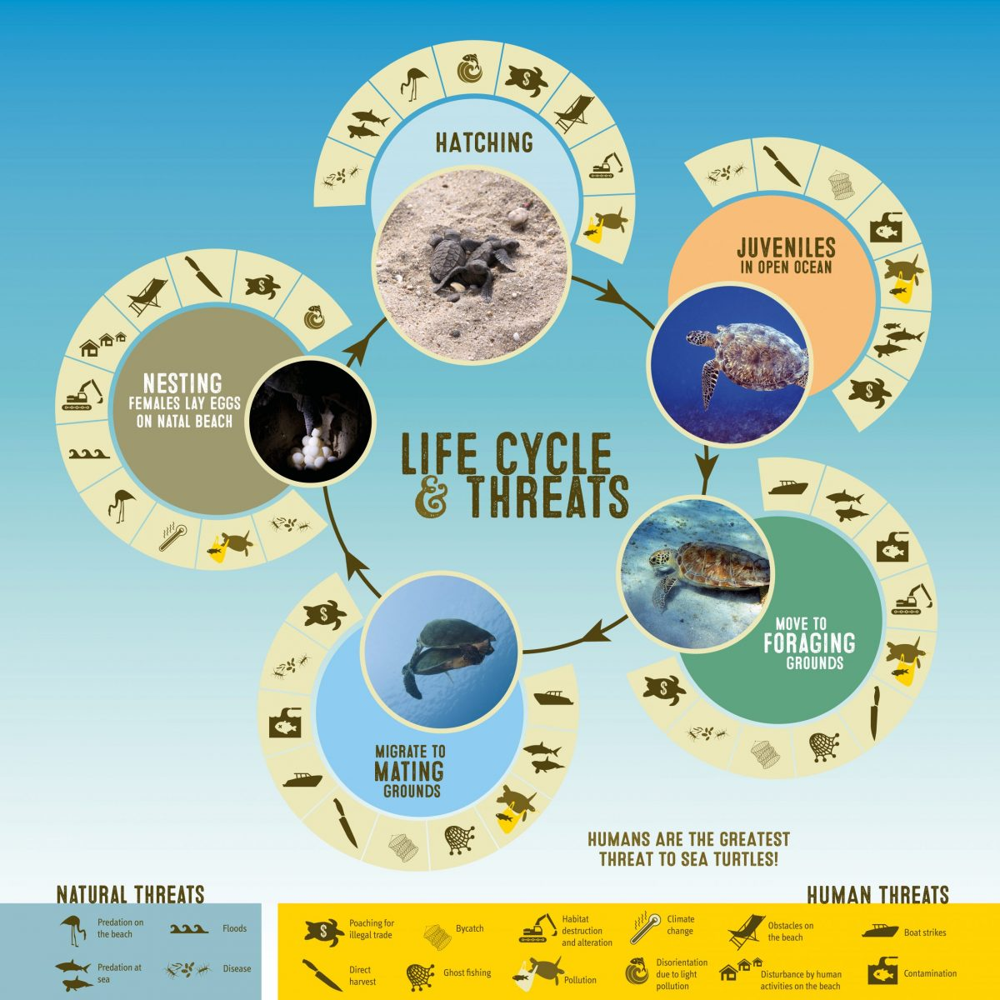
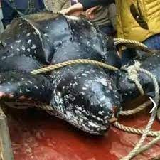
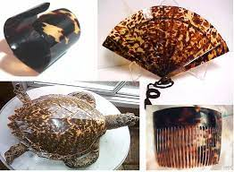
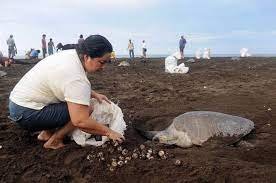
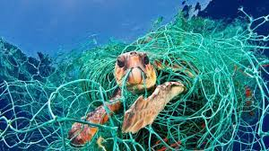

1.Natural Threats
Predators represent the main natural threats for marine turtles. Feral dogs. Water monitors, land monitors, jackals, wild boars, mongooses, several
Species of ants and crabs can be considered as natural predators for marine turtle eggs and hatchlings on nesting beaches (Photo no. 31). Killer whales/
Orca whales, Sharks and other reef fishes and sea birds' prey on hatchlings in the sea. Sometimes harsh weather conditions such as storms, tornados,
draughts, and El Nino phenomenon can cause damage to the laid turtle nests.
2.Manmade Threats
Today marine turtles are in great danger mostly due to the activities of human beings, Some of the man made threats are briefly described below.
- Kill for Meat
- Kill for shell
- Egg coleection
- Turtle by-catch
- Non-Scientific turtle hatchery practices
- Habitat Destruction
- Coral Mining
- Beach Erosion
Read More

Kill for Meat
Marine turtles are killed for their meat in many countries. In Sri Lanka, slaughter of marine turtles for meat is a traditional practice in many
coastal areas. Slaughter of nesting adult females directly effects the reduction of the turtle population. Live turtles entangled in fishing
gears are also slaughtered by for flesh by the fishermen.
Kill for shell

The highly endangered Hawksbill turtles have been killed in many parts of the world for its beautiful shell or carapace to provide raw material
for the ‘’tortoise shell’’ trade. When scutes are removed from the shell, the turtle eventually dies. Synthetic fibres with similar colour patterns
are now available to replace the tortoiseshell dies. Synthetic fibres with similar colour patterns are now available to replace the tortoiseshell
raw materials for the good sake of hawksbill turtles.
Read More

Egg Collection
One of the most widespread forms of marine turtle exploitation is the illegal poaching of turtle eggs . As female turtles come ashore to lay
their eggs this makes a easy prey for egg collectors who take the eggs and sell them. All marine turtle nests on Sri Lankan beaches are robbed
of their eggs except in places where conservation programmes are implemented. The eggs are either sold at markets for consumption or to turtle hatcheries.
Turtle-by-catch

Large number of marine turtles becomes victims of the modern fishing gear. Well over 0000 turtles are entangled annually in floating and bottom set
gill nets in Sri Lanka. Shrimp trawling and fishing hooks with baits cause serious damages to marine turtles in other parts of the world.
Read More